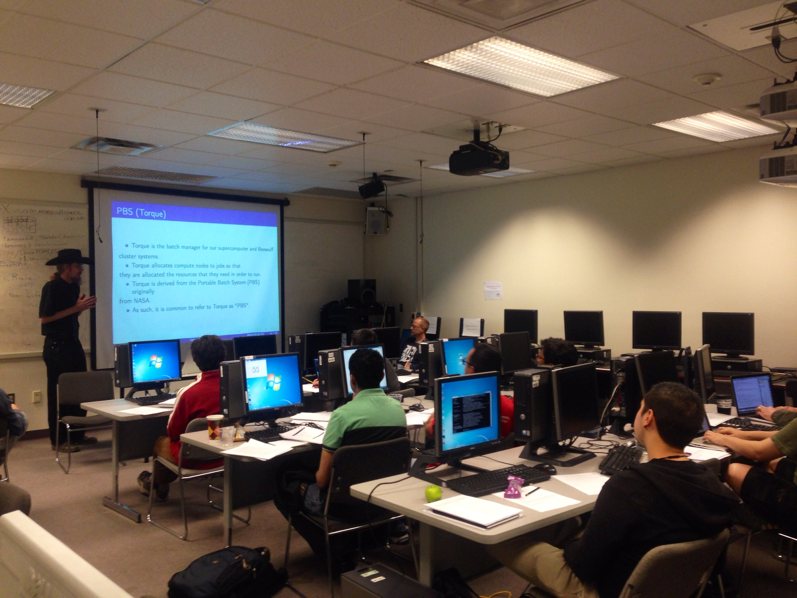

Intro to Computing at CARC Workshop
March 26, 2014
CARC is pleased to announce the first of a series of workshops for new (or not-so-new!) users at CARC. These half-day workshops are designed to get researchers up and running quickly on CARC systems. In addition to tutorial presentations, there will be an open lab session for users to bring their codes for personalized consultation on compilation, job submission, and batch submission, or to debug performance issues. The goal of this workshop is to enable users to get more research work done by using CARC resources. The workshop will consist of short tutorial lectures, followed by an open lab session. Registration is free, but limited; please register by emailing workshops@carc.unm.edu.
- Monday, April 21st, 2014, 1:30-5:30 p.m.
- Thursday, April 3rd, 2014, 1:30-5:30 p.m.
- Monday, March 31st, 2014, 1:30-5:30 p.m.

Topics
- CARC Introduction
- Getting access to machines
- Available compute resources
- Linux basics
- Logging in; transferring files; XWindows; editors
- Remote display using VNC; connecting to jobs via ‘screen’
- Introduction to shell scripting
- Using CARC systems
- Environment modules
- Intro to parallelism
- Tightly‐coupled (MPI/OpenMP) parallelism
- “Embarrassingly parallel” (high‐throughput) parallelism
- Submitting batch jobs; queues and queue limits; special requests
Open Lab Session
Following the tutorial presentations, students will split up into special interest groups, e.g. tightly‐coupled parallel programs (certain engineering and scientific codes) and “embarrassingly parallel” programs (making multiple runs using differing input parameters) – more specifically, we plan to cover the “embarassingly parallel” cases of running Matlab or R in batch mode. Users are invited to bring examples of their codes for 1‐1 consultation on compilation, job submission, and batch submission, or to debug performance issues. If any licensed software will be required, please let us know in advance.
Instructors
Jim Prewett, CARC Systems and User Services Group
Dr. Steve Koch, University Libraries
To register, email workshops@carc.unm.edu. Please indicate preferred session, and provide your full name, email, and department; affiliation (undergrad, grad, postdoc, faculty); and indicate any specific computational interests for the open lab session of the workshop.
Recent News
Presidential Executive Order Establishes National Strategic Computing Initiative
July 30, 2015
Ecological and Evolutionary Genomics Biology Class at CARC
July 15, 2015
CARC Hosts 2015 Sandia/UNM Summer Institute on Nonlinear Mechanics and Dynamics
July 10, 2015
Bosque School Computing Workshop at CARC
June 6, 2015
News Archives
Center for Advanced Research Computing
MSC01 1190
1601 Central Ave. NE
Albuquerque, NM 87106
p: 505.277.8249
f: 505.277.8235
e: info@carc.unm.edu
© 2014 The University of New Mexico, Albuquerque, NM 87131, (505) 277-0111
New Mexico's Flagship University